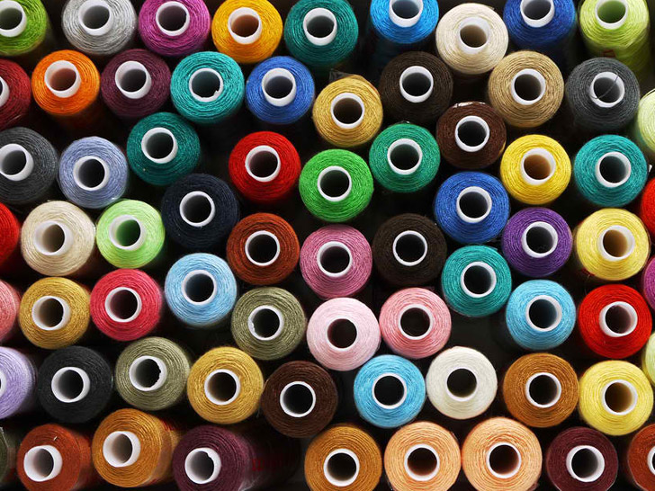

Founded in 1976, Treadle Yard Goods is a full service fashion fabric store located on St. Paul’s premier shopping street, Grand Avenue. We carry a splendid collection of quality natural fiber fabrics, including many imported and designer pieces, unique buttons, gorgeous ribbons, patterns and notions.
Treadle offers a wide array of gorgeous silks for bridal, special occasion and business wear. You will find beautiful woolens and sumptuous velvets for your fall and winter sewing projects and cool linen and fine cottons for warm weather apparel. Our collection of cotton novelty prints and cotton and rayon batiks is dazzling. You don’t have to sew to enjoy our colorful oilcloth yardage. Our incredible button selection features buttons from around the world, as well as an ever changing collection of vintage buttons. Our trim collection includes grosgrain, satin and velvet ribbon, sophisticated tapestry braids and lovely hand dyed silk ribbon.
Treadle offers a wide variety of sewing classes, including beginning sewing for adults and children and our flexible Sewing Salons. Expert sewing machine service and repair are available through the shop. Our talented staff is helpful, creative, extremely knowledgeable and always willing to answer questions and solve problems. We invite you to visit us and discover a wonderful world of natural fibers and a creative community of sewing and textile enthusiasts.